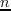
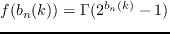

Next: Dynamic Spectrum Management Introduction Up: DSL System Architecture Previous: DSL System Modelling Contents
The above model allows the generation of 'idealised gains' for a given line, ignoring all external effects, such as the aforementioned cross-talk. To bring cross-talk into the picture, assuming that NEXT is eliminated completely by FDD, we can model FEXT based on the industry standard ETSI 1% ANS (2003) model (equation (2.7))
The "1%" in this case represents the worst-case-scenario, and in a real deployment would not be encountered 99% of the time. This is partially driven from systemic pessimism, but partially comes from the fact that this worst-case scenario allows for a modelling function that is smooth with frequency.
In most cases, this 1% model is over zealous in its estimations of cross-talk coupling, and also ignores spatiality within the bundle 2.4. Using real data from a four sub-bundle, 100x100 DSL binder, the existing model can be modified to more closely match the coupling data of the 'real' bundle.
Where the modifier  is selected based on a Beta probability distribution of sample data, for example, Alcatel-Lucent (2007).
is selected based on a Beta probability distribution of sample data, for example, Alcatel-Lucent (2007).
As stated, DSL is a cross-talk-limited system, and as such, the effect of cross-talkers also effects some of the fundamental assumptions that must be made about the transmission characteristics of the lines in the bundle.
From Sumanth Jagannathan (2008), the approximate Shannon Gap for a DSL system based on M-QAM is derived thus. From the Central Limit Theorem, as the number of cross-talkers increases, the effects of those cross-talkers approximates to a Gaussian DistributionK.J. Kerpez (1993). Therefore, a DSL channel can be approximated as an Additive White Gaussian Noise (AWGN) channel, which is described C.E. Shannon. (1948):
This represents the maximum possible capacity (in bits) on a given channel (), ignoring practical considerations such as coding complexity and processing delays. From C.E. Shannon. (1948) and J. M. Cioffi. (1991), the probability of a symbol error for an uncoded M-QAM constellation 2.5 on a given sub-channel is shown in equation (2.10)
Where is the probability of unitary Gaussian variable will will exceed  , given in equation (2.11). In general, DSL systems aim for this probability of symbol error () to be around .
, given in equation (2.11). In general, DSL systems aim for this probability of symbol error () to be around .
(2.11) is generally rewritten in terms of the standard error function , shown in equations (2.12) and (2.13).
Rearranging (2.10) for gives (2.14)
Revisiting (2.1), (2.15) can be obtained, expressing the number of bits that can be encoded on a sub-channel.
Contrasting (2.15) with (2.9), the uncoded channel gap is defined in equation (2.16).
This allows simplification of equation (2.15) with respect to (2.16) into (2.17)
This characterisation of the Shannon Gap is not quite complete, and represents the best-case scenario within a DSL system, while ignoring potential coding gains from Forward Error Correction such as the TrellisG. Ungerboeck (1982) or Reed-SolomonI. S. Reed and G. Solomon (1959) coding schemes.
As such, two additional modifiers are added to the calculation; a performance margin  which allows for SNR 'headroom' to maintain error rates during temporarily bad noise conditions, and a coding gain
which incorporates any error correction modulation in place. This gives a final sum shown in equation (2.18)
which allows for SNR 'headroom' to maintain error rates during temporarily bad noise conditions, and a coding gain
which incorporates any error correction modulation in place. This gives a final sum shown in equation (2.18)
In Alastair McKinley (2009) it is demonstrated that cross-talk coupling can be assumed not to have any practically relevant effect on sub-channels other than the sub-channel from which that cross-talk originates, such as when DMT blocks are transmitted and received synchronously or when cyclic prefixing and pulse shaping ("Zipper" DMTF. Sjoberg and jesson. (1999)) is used.
From C.M. Akujuobi (2006), equation (2.19) shows the maximally optimal bit-loading on line  of  users, and tone
users, and tone  of
of  total sub-channels, including the above derivation for FEXT coupling.
total sub-channels, including the above derivation for FEXT coupling.
In equation (2.19), the following definitions are provided for clarity;
By letting , (2.19) can be rearranged to (2.20)
It is clear that equation (2.20) can be characterised as an N-dimensional linear system of equations, of the form
Where
As such, the vector  , as a function of , describes the amount of bits loaded onto each user's line on tone
, as a function of , describes the amount of bits loaded onto each user's line on tone  , and prescribes the power required on each line to support the vector
, and prescribes the power required on each line to support the vector  of bits loaded onto those lines on channel
of bits loaded onto those lines on channel  . It is the solution and optimisation of this system of equations that is the fundamental limiting factor, and drive for, DSM systems.
. It is the solution and optimisation of this system of equations that is the fundamental limiting factor, and drive for, DSM systems.
The reasoning for this is primarily visible looking at the concept of rate-regions, i.e an  -dimensional surface of possible maximum line bit-loads for each user . Figure 6 shows the relationship between two given users, and within a given bundle. It is evident that one could achieve an very high data-rate on one line, but at great expense to the other. Mathematically, the search for optimal bit-loading is summed up in (2.25).
-dimensional surface of possible maximum line bit-loads for each user . Figure 6 shows the relationship between two given users, and within a given bundle. It is evident that one could achieve an very high data-rate on one line, but at great expense to the other. Mathematically, the search for optimal bit-loading is summed up in (2.25).
Using an optimal rate-region, of the style demonstrated in equation 2.25 can be generated algorithmically from the above equations. But often these algorithms can be computationally intractable, and less computationally expensive (but sub-optimal) algorithms are used instead, producing reduced rate regions, as shown, which do not take full advantage of the available spectrum given the same cross-talk and bundle noise characteristics.
In essence, this Spectrum Management Problem, as stated in equation (2.25), can be expanded based on line-weighting; where some lines get 'preferential treatment', either because they are paying more, or as part of a lead-and-lag rate-compensation system2.6. Thus, the Spectrum Management Problem can be generalised to  users as a maximisation of a weighted sum of data rates within a bundle, as shown in equation (2.26).
users as a maximisation of a weighted sum of data rates within a bundle, as shown in equation (2.26).
The optimisation of this problem in a dynamic near-realtime time-frame is the major focus of DSM research, which is summarised next.